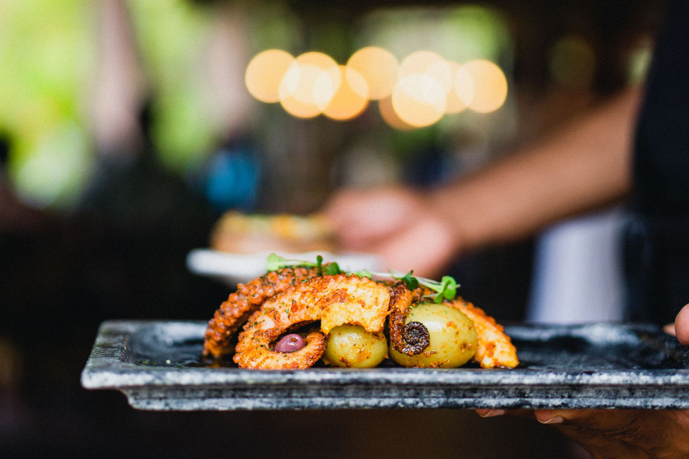
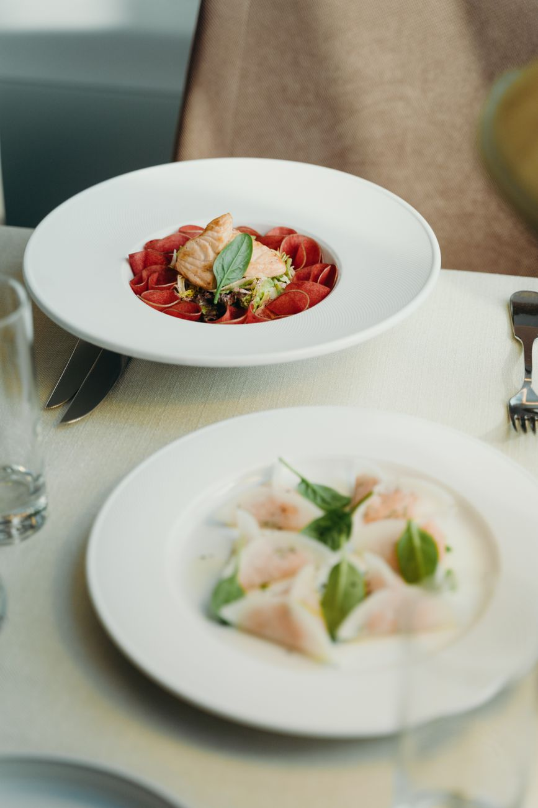
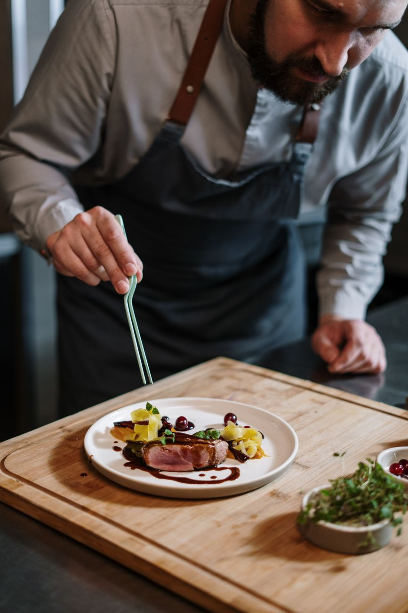
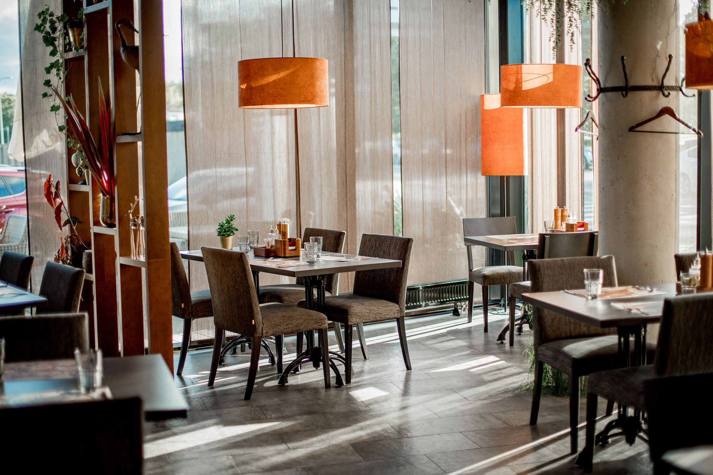
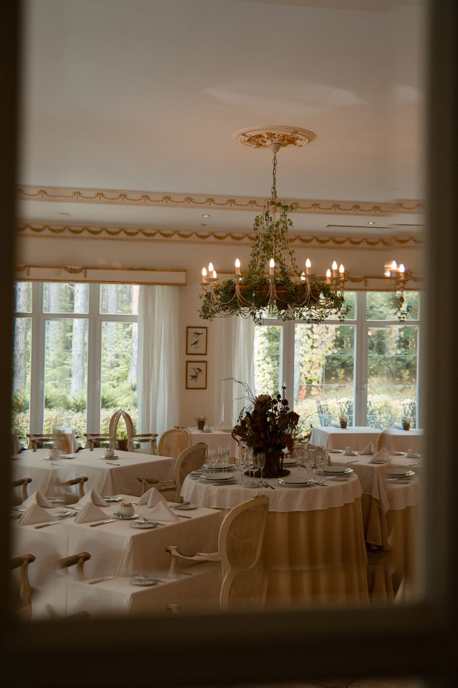
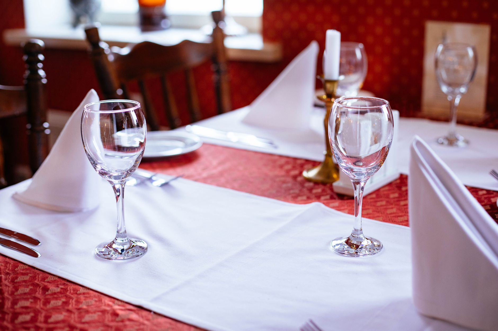
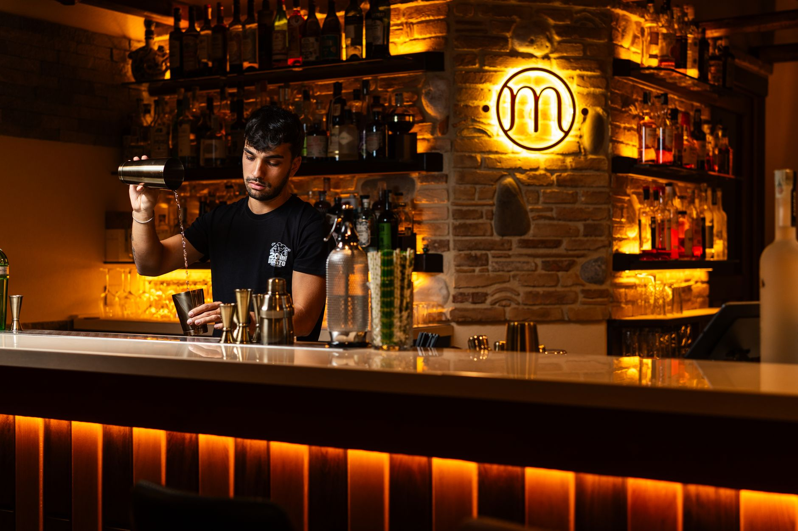
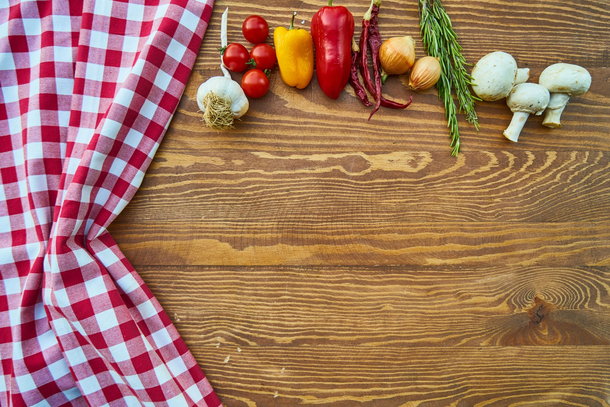

4.9★ Поділ · Андріївський узвіз
Сучасна українська кухня.
Смак, що пам'ятаєш.
«Терен» — це локальні продукти, відкрита кухня та сезонне меню від шефа. Затишний зал на Подолі, авторські страви й теплий сервіс щовечора.
4.9 в Google · 312 відгуків

01 Про ресторан
Не про пафос. Про чесний смак, локальні продукти й вечори, з яких не хочеться йти.
«Терен» відкрився на Подолі, щоб показати сучасну українську кухню без зайвого: сезонні продукти від фермерів, відкрита кухня і меню, яке змінюється разом із порами року.
-
Локальні продуктиОвочі, м'ясо й риба від українських господарств.
-
Відкрита кухняБачите, як народжується ваша страва.
-
Сезонне менюОновлюємо щотижня — тільки те, що зараз найсмачніше.

Відкрита кухня «Терен»
03 Наша кухня
Готуємо на вогні — з поваги
до продукту й до тих, хто за столом.
Кожна страва — це сезон, регіон і руки шефа. Ми працюємо з локальними фермерами, коптимо й ферментуємо самі, а меню тримаємо коротким — щоб усе було свіжим, а не «зі списку на 200 позицій».
18страв у сезонному меню — і жодної випадкової
100%локальні продукти від українських господарств
6років на Подолі — вже улюблене місце
04 Формати
Не тільки вечеря —
привід завітати щодня
Ранкова кава
Щоранку з 10:00 — кава та свіжа випічка з нашої печі.
Дегустаційне меню
П'ять страв від шефа з винним супроводом — цілісна історія смаку.
Винна карта
Українські та європейські виноробні — підкажемо пару до страви.
Приватні події
Зал під ключ для святкувань до 40 гостей — з окремим меню.
Бранч по вихідних
Спокійні суботи й неділі до 16:00 — неспішно і смачно.
Кейтеринг
Наша кухня — на вашому святі, у вашому просторі.
05 Простір
Місце, куди хочеться повертатись




06 Нам довіряють
4.9середня оцінка в Google
на основі 312 відгуків
на основі 312 відгуків
40гостей у затишному залі
без тісноти й галасу
без тісноти й галасу
6років на Подолі
вже стали улюбленим місцем
вже стали улюбленим місцем
На Андріївському узвозі
Дві хвилини від Контрактової площі, у серці старого Подолу. Легко дійти пішки, поруч — фунікулер і набережна.
Instagram ресторану07 Бронювання
Забронювати
стіл
Залиште контакт — підтвердимо бронювання й підкажемо з меню. Відповідаємо швидко, у робочі години.
- АдресаАндріївський узвіз, 2Б, Київ
- Телефон+38 073 555 00 20
- ГрафікПн–Нд, 10:00–23:00
- Поштаhello@teren.kyiv.ua